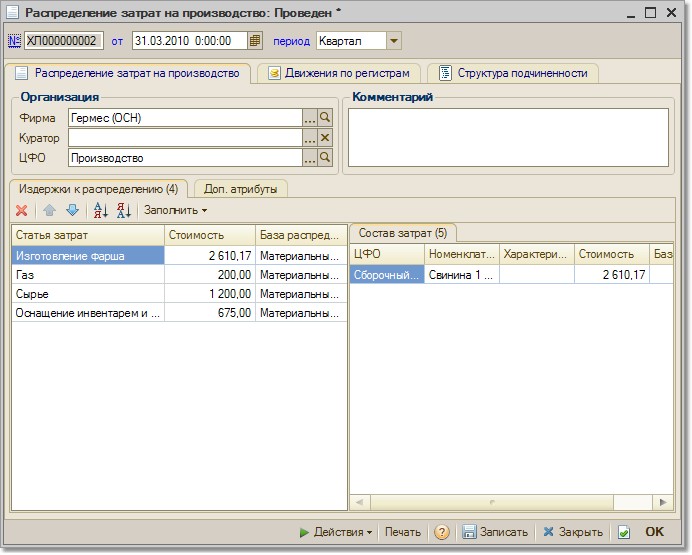

Меню Производство > Распределение затрат
Документ "Распределение затрат на производство" предназначен для распределения косвенных затрат на производство продукции по управленческому учету. Статьи затрат и база распределения настраиваются пользователем. В документе предусмотрена возможность автоматического заполнения табличной части в соответствии с нераспределенными косвенными затратами в организации на дату формирования документа.
При формировании документа выбирается период, за который производится распределение: месяц или квартал.

По кнопке "Заполнить" производится автоматическое заполнение табличной части нераспределенными на дату формирования документа затратами. При необходимости можно обновить таблицу затрат, - при этом настройки распределения, сделанные ранее, не изменяются.
Левая табличная часть - это нераспределенные затраты, а правая часть - состав выделенной в левой части затраты.
Для каждой статьи затрат можно указать свой вариант распределения:
При проведении документа происходит списание нераспределенных затрат с регистра "Нераспределенные затраты" и увеличение оборотов по регистру "Затраты на производство".